University of Zurich
University of Zurich
Quantal Theory (QT)
Adaptive Dispersion Theory (ADT)
Dispersion-Focalization Theory (DFT)
Prediction 1 (QT):
Prediction 2 (ADT):
Prediction 3 (DFT):
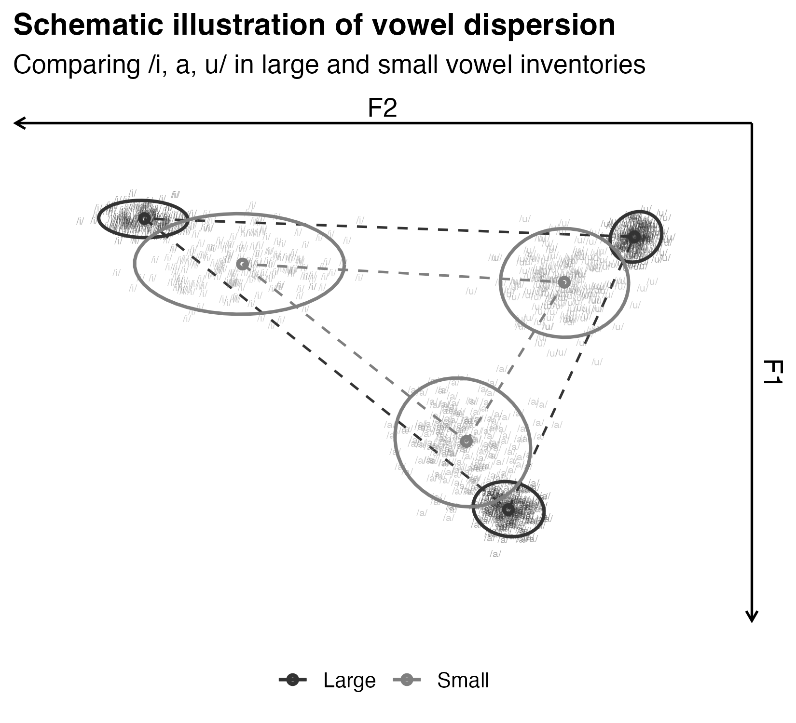
| Global | Local |
|---|---|
| Convex hull area (Al-Tamimi and Ferragne 2005); mean distance to vowel space center (Engstrand and Krull 1991); maximal F1/F2 ranges (Recasens and Espinosa 2009) | Standard deviation/variance (Heeringa and Schoormann 2015); acoustic ellipses (Recasens and Espinosa 2009); inter-token distances (Engstrand and Krull 1991) |
The majority of previous work did NOT find supportive evidence for ISH, either in global dispersion or local precision.
Some studies did find supportive evidence for ISH.
Limited Language Sampling
Restricted Speaker Pools
This introduces substantial bias, yet the exact magnitude of the bias remains unclear.
We investigate the effect of vowel inventory size on vowel dispersion (global dispersion and local precision) across 67 languages using a large-scale multilingual phonetic corpus, VoxCommunis (Ahn and Chodroff 2022), using the point vowels /i, a, u/.
Research Questions:
Do larger vowel inventories show greater global dispersion?
Do larger vowel inventories show increased local precision?
Global dispersion: Mean distance to the vowel space center of each speaker × vowel group.
Local precision 1: Mean distance to the vowel centroids of each speaker × vowel group.
Local precision 2: 95% confidence ellipse area of each vowel category of each speaker.
Overall confusability: Joint conditional entropy of the vowel system of each language.
Mean distance to the vowel space center of each speaker × vowel group.
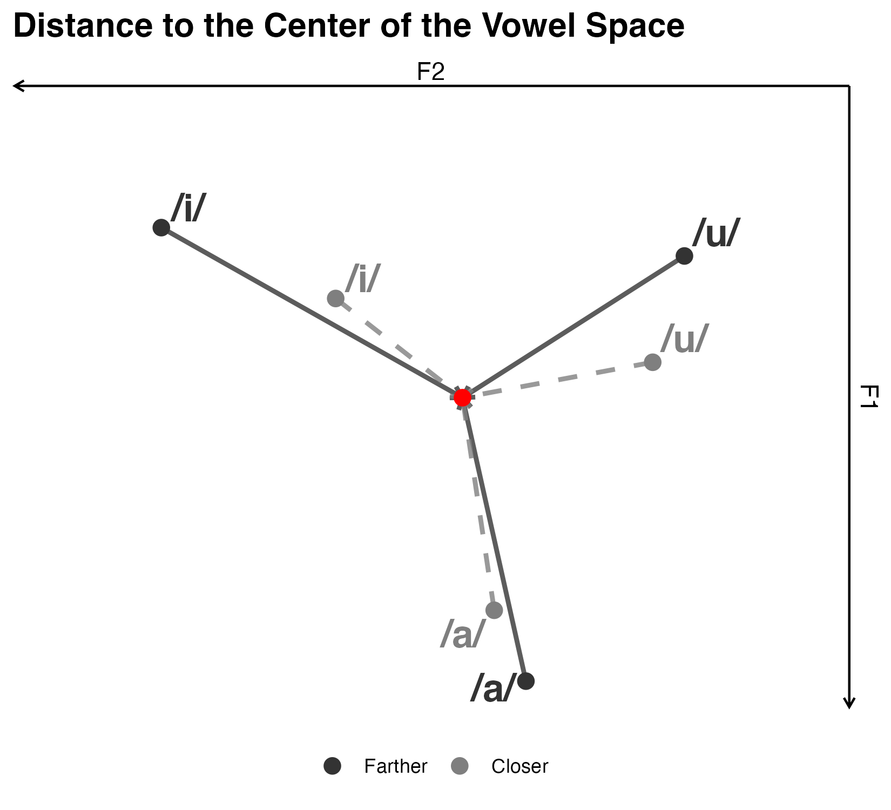
Mean distance to the vowel centroids of each speaker × vowel group.
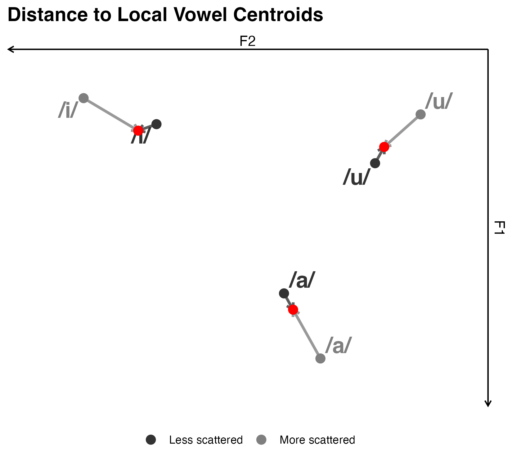
95% confidence ellipse area of each vowel category of each speaker.
\[\text{Area} = \pi \cdot \chi^2_{0.95, 2} \cdot \sqrt{|\mathbf{\Sigma}|}\]
Where \(\mathbf{\Sigma}\) is the covariance matrix of (F1, F2) within each speaker × vowel group.
Joint conditional entropy of the vowel system of each language. Lower entropy = less distributional uncertainty and confusability.
\[H(F1,F2|V)=\sum_{v}p(v)H(F1,F2|V=v)\]
Where \(H(F1, F2 \mid V=v)\) is the entropy of the 2D Gaussian distribution of vowel \(v\) computed from its covariance matrix \(\mathbf{\Sigma}_v\):
\[H(F1, F2 \mid V=v) = \frac{1}{2} \ln \det(2\pi e \mathbf{\Sigma}_v)\]
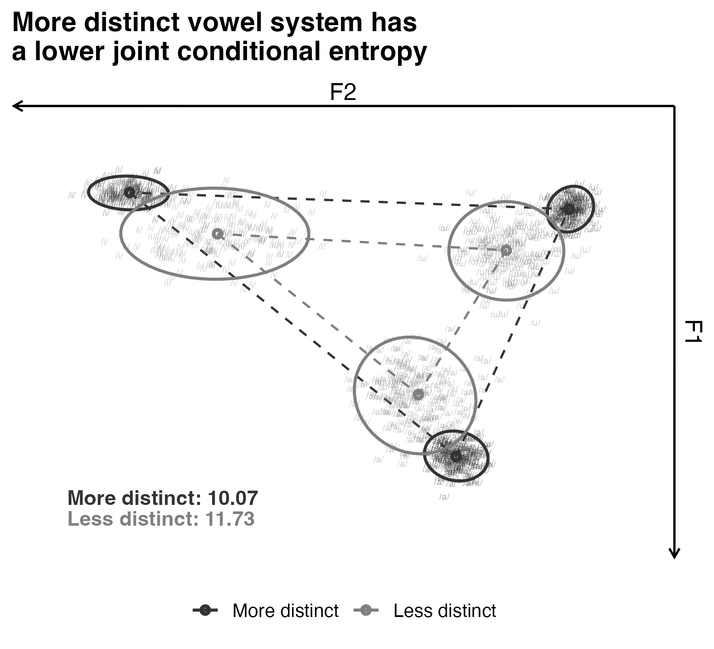
Our dataset consists of speech from across 67 languages in 18 language families, produced by 59,658 speakers. The number of speakers per language ranges from 10 to 17,293, with a mean of 890 and a median of 160.
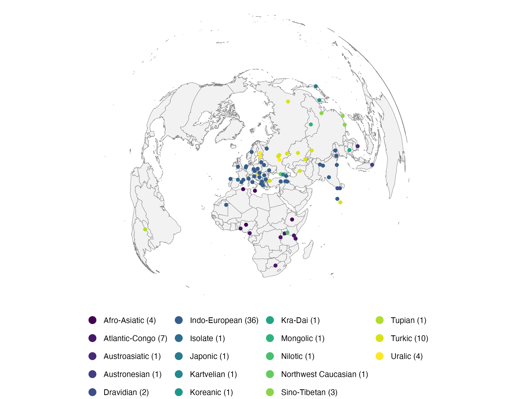
Speech comes from Mozilla Common Voice (Ardila et al. 2019) with phone- and word-level alignments from VoxCommunis (Ahn and Chodroff 2022).
Common Voice: an open-source, crowd-sourced multilingual dataset created by Mozilla, consisting of scripted read speech, and currently contains over 20,000 hours of speech in 120+ languages.
VoxCommunis is a phonetic corpus derived from the Common Voice dataset, specifically curated to support large-scale cross-linguistic acoustic analysis and laboratory phonetics research.
Ads: come see our lightning talk on VoxCommunis at CorpusPhon2 on 06/29!
From all monophthongal vowel tokens (both long and short) in VoxCommunis, we extracted the first two formants at the vowel midpoint using Parselmouth (Jadoul, Thompson, and de Boer 2018).
Formant tracking parameters for different pitch ranges:
| Pitch Range | F0 Threshold | Frequency Range | Number of Formants | Window length |
|---|---|---|---|---|
| High | ≥ 160 Hz | 0–5500 Hz | 5 | 0.025s |
| Low | < 160 Hz | 0–4500 Hz | 4 | 0.040s |
Outliers were removed within each language \(\times\) vowel \(\times\) pitch range using a 95% Mahalanobis distance threshold (\(\text{df} = 2\)).
Formants were speaker-normalized with the ΔF method (Johnson 2020) using all tokens for each speaker.
The ΔF method models the vocal tract as a uniform tube to calculate a speaker-specific formant spacing parameter (\(\Delta F\)). Scaling raw formants by \(\Delta F\) removes anatomical variance, centering the normalized vowel space on (0.5, 1.5).
\[ \Delta F = \frac{1}{mn} \sum_{j=1}^{m} \sum_{i=1}^{n} \left[ \frac{F_{ij}}{i - 0.5} \right] \]
\[ F_i' = \frac{F_i}{\Delta F} \]
Where:
Speakers and languages:
Special cases of vowels:
Vowel quality counts:
For each vowel-level metric (Metrics 1-3):
\[ \text{metric} \sim \text{vowel} * \text{inventory size} + (1 + \text{vowel} \mid \text{language}) \]
For the joint conditional entropy metric (Metric 4):
\[ \text{entropy} \sim \text{inventory size} + (1 | \text{language}) \]
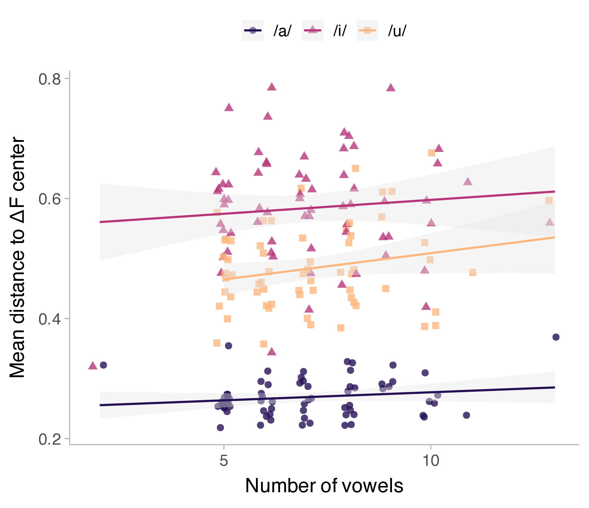
Inventory-size effect:
\(\beta = 0.005\), \(SE = 0.003\), \(p = 0.109\)
No reliable evidence that larger inventories push point vowels farther from the vowel space center.
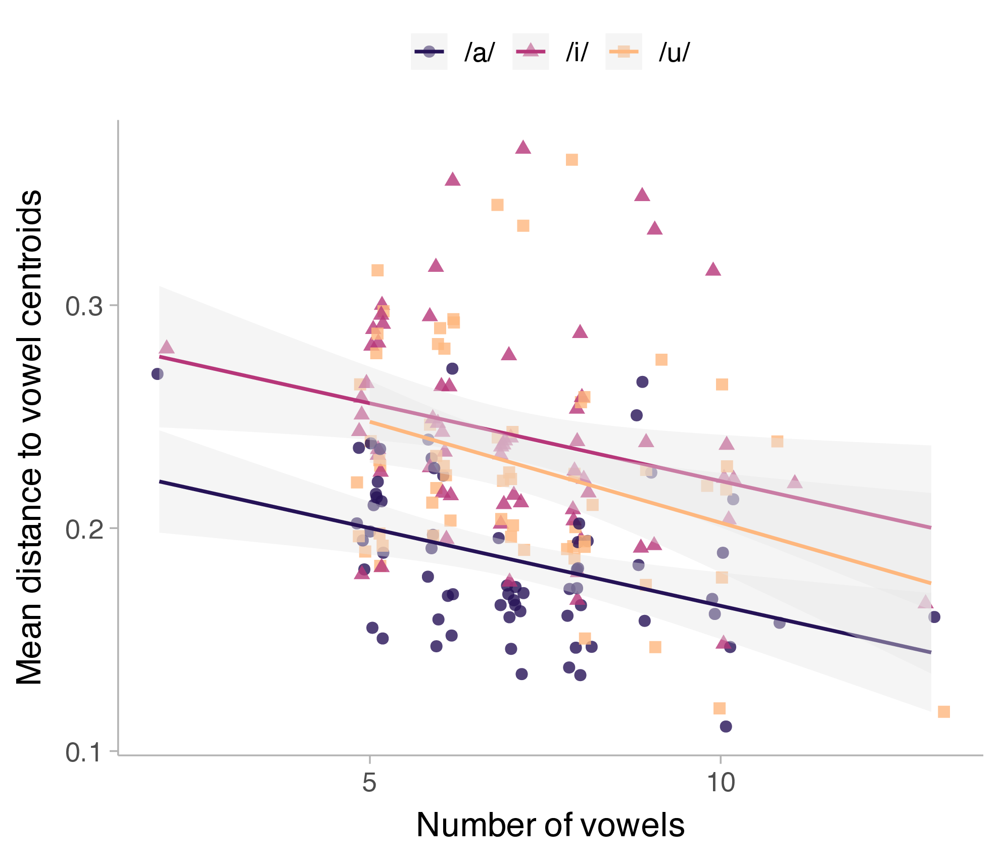
Distance to centroid
\(\beta = -0.008\), \(SE = 0.002\), \(p = 0.001\)
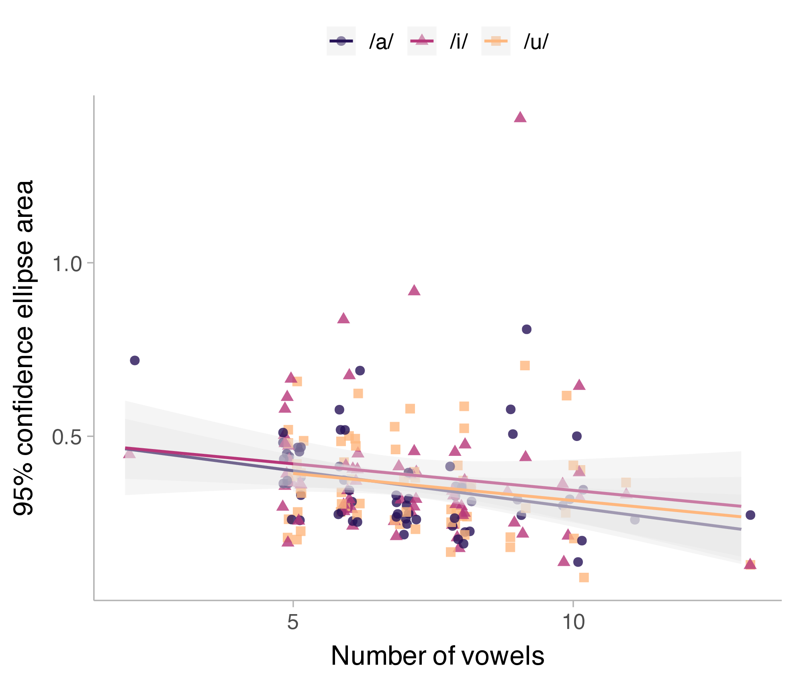
Ellipse area
\(\beta = -0.018\), \(SE = 0.008\), \(p = 0.039\)
Larger inventories show tighter, more compact vowel categories across both metrics.
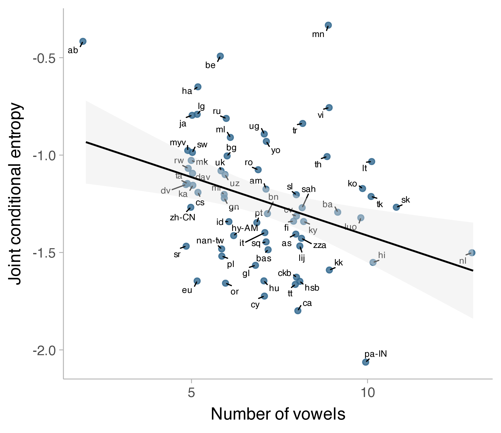
Inventory-size effect:
\(\beta = -0.060\), \(SE = 0.020\), \(p = 0.003\)
Lower entropy indicates less distributional uncertainty within vowel categories.
Inventory pressure appears to affect local precision more clearly than global dispersion.
These are mixed results that partially support the phonetic predictions of Quantal Theory (QT) and Adaptive Dispersion Theory (ADT), but not that of Dispersion-Focalization Theory (DFT).
Dispersion is constrained
According to QT, the point vowels are already in the most stable region of the articulatory-acoustic space, so they cannot be pushed farther apart without sacrificing acoustic-perceptual stability.
Precision is flexible
However, languages can reduce the acoustic spread of the vowels to enhance the perceptual distinctiveness when the entire vowel space becomes more crowded.
Previous research has not shown a consistent relationship between vowel inventory size and vowel dispersion, potentially due to bias in sampling.
The mean number of language examined in previous experimental study was less than 4, and the average number of speakers per language was only 7.
To evaluate the bias due to small samples, and to estimate the probable minimum number of languages needed to make a reliable typological inference, we ran a two-step resampling simulation based on our dataset.
1. Bias Evaluation
2. Power Analysis via Resampling
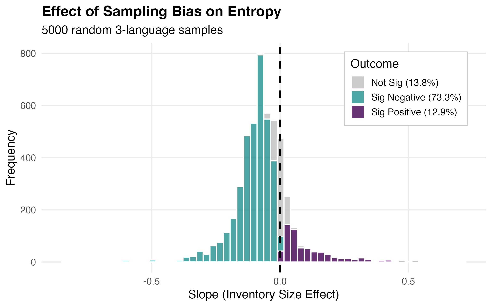
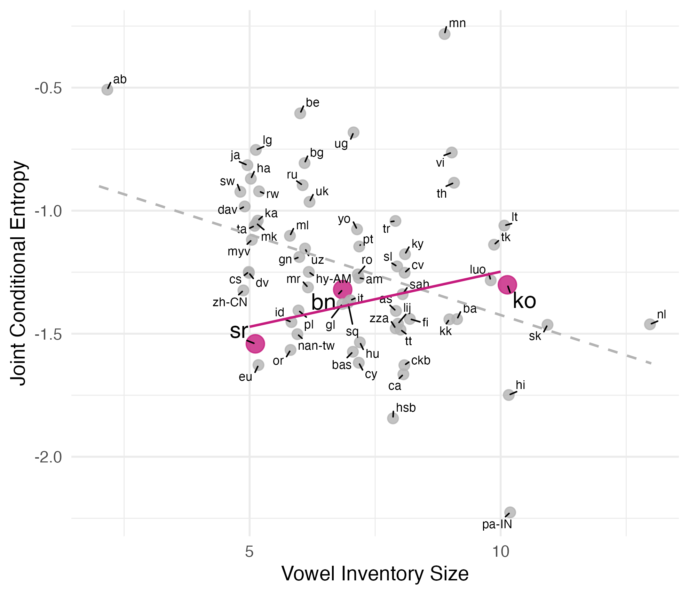
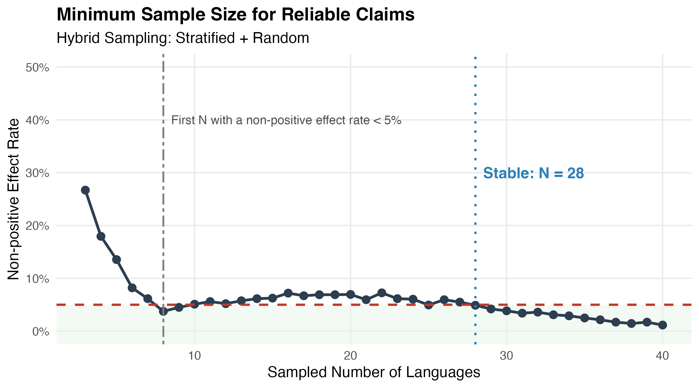
A minimum of 8, preferably 28 languages are needed to reduce sampling bias to an acceptable level.
Across 67 languages, larger vowel inventories show vowel production with greater local precision, but not reliably greater global vowel dispersion.
For a crosslinguistic phonetic typological claim like the inventory size hypothesis, low numbers of sampled languages can easily lead to biased results.
Corpus phonetic studies allowing for large-scale crosslinguistic analysis can help reduce sampling bias and increase the reliability of the typological inference.
Ad: Come to the CorpusPhon2 workshop on Monday